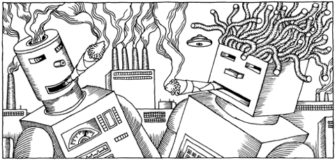

|
Будущее пыхтит!
Interviewer: Bob, how did you start out in singing?
Bob Marley: Started out... crying. Yeah, started out crying, yunno.

Здравствуйте,
девочки и мальчики! Тут один юбилейчик назрел, о
котором хочу напомнить. Ровно 15 лет назад таймер
набил оруэлловские 1984, и в СССР был введен черный
список молодежных музыкальных групп. Жаль, нет
его у меня под рукой. Было бы интересно
посмотреть, куда подевались те самодеятельные
ВИА, на которых поставил жирную звезду
готовившийся к новой волне репрессий КГБ. Ничего
не вышло: мудрый Горби шуганул нашего
вавилонского паука.
О, эта опьяняющая свобода, смывшая трухлявые
бастионы тоталитарных оппозиций и выведшая
шоу-менов из андеграунда в супергерои нашего
времени! Они реализовали все, что накопили за
годы запрета, напродавали пластинок и надавали
интервью, они вывернулись наизнанку, прыгнули
выше головы и выложились на 100%. А потом устали.
Легализация пагубно отразилась на состоянии
физического и душевного здоровья бывших
подпольщиков. Их ряды поредели. Некоторые не
удержались на новом повороте, занесенные своими
ревущими моторами под откос. Другие, потеряв
ненавистный, но, по-видимому, необходимый образ
врага, столкнулись с дефицитом идейного
содержания - о чем петь в новые времена, какой
музыкой зажигать сердца? И вот постаревшие
радикалы исполняют "лучшие блюзы и баллады",
мелькая в обнимку с поп-официозом и собирая свою
Горбушку, а то и ГКЦЗ "Россия". Но на самом
деле лишь немногие из них держатся уверенно на
сменивших свой фундамент подмостках. Что может
быть смешнее и нелепее, чем бывший народный
трибун, вынужденный развлекать толпу ленивых и
сытых отдыхающих? Только бывший народный трибун,
развлекающий уличных сумасшедших.
Незаметно в России победила компьютерная
революция, оттеснив на второй план в массовом
бессознательном и сексуальную, и
бархатно-шоковую социальную. Пестрый рой
ди-джеев слетелся на подросшие цветы
перестройки, новое поколение весело и беззаботно
принялось выбирать между "Пепси" и экстази.
Звукозаписывающие компании вкупе с
клипмейкерами да FM-энтузиастами сладострастно
пропагандировали глянцевый стиль radio friendly:
"liebe, liebe, amore, amore", запечатленный
"Бетакамом" поцелуй, бесшабашный
"Максидром", все эти
панк-фанк-хип-хоп-суррогаты. Как говорил поэт,
"оккупант на оккупированном курорте купался, и
этот эксперимент хорошо окупался".
Однако пора прощаться, как любит повторять
политический комментатор Леонтьев. Эйфория
международного братания незаметно переросла в
этот дивный-новый-холодный мир. Заржавевшие
гайки дрогнули и у NATO, и у нашего большого брата.
Веселые тряски на танцполе, в условиях
экономического и юридического (с переходом в
петитенциарный) прессинга как-то уже не совсем
актуальны. Не катят более и "черные на
красном" нацбольские прорывы бывших записных
анархистов, и "золотые на голубом" хилые
закосы под любовь, от которых сводит ноги и
мерещатся чижи с медведями.
Пугачевой стукнул полтинник, Киркоров закосил
под вампира, Шура скоро вставит зубы.
Шоу-вивисекторы в поте лица клонируют Spice girls &
Backstreet boys, а птюч-рэйволюционеры в дорогущих
ночклубах ностальгируют по былым угарам на
Gagarin-party. Страна ждет выборов, после которых,
возможно, лавочку окончательно прикроют. В
туманном Междумирьи мы зависли, и не хватает
энергичной мысли.
Может быть, назад в андеграунд, как пел когда-то
Рикошет из "Объекта насмешек"? Так ведь нет
никакого андеграунда, а вместо "Объекта"
подростков потешает вылупившаяся из него
"Текиладжаззз". Как в "Подполье"
Кустурицы, когда вылезший из подвала партизан
Черный вместо театра военных действий попадает
на съемочную площадку. Или как в "Подземке"
Бессона, где создавший наконец свою рок-группу
Кристофер Ламберт гибнет от бандитской пули.
Но сахару сахарово, а пороху - порохово. Кто-то,
конечно, вышел на крыльцо и потерял свое лицо, но
по-прежнему бродят по России экзотические фрики,
наперекор всему сочиняют, пляшут и поют. Иногда
прорываясь на MTV, как "Маркшейдер Кунст", или
на МузТВ, как Jан Division. О них можно узнать из
косвенных упоминаний в прессе, как про Доктора
Айболита, которого поругали в журнале ОМ в статье
о Михее и "Джуманджи". Последнего-то с его
"Сукой-любовью" крутят по всем каналам и
волнам, а вот айболитовскую "Аддис-Абебу"
можно было услышать только на презентации
Журнала ПГ в клубе "Территория". Да еще на
паре маргинальных фестивалей. Айболит не виноват
- так же как не виноваты "Карибасы" (СПб)*,
"Запрещенные Барабанщики" (Челябинск)**,
"Непалево" (Минск). Как не виноват уникальный
шансонье Псой Короленко, не имеющий возможности
собрать свой ансамбль и вынужденный петь в
одиночку черте где с грехом пополам. Как не
виноваты все те, кто бился лбом о стену инерции и
тупости, а потом взял да и слился: в лес
отшельничать, на Западе фестивальничать. Или
посуду мыть.
А что им оставалось? Ожидание у моря погоды имеет
тенденцию оборачиваться разбитым корытом.
Альтернативного, малого да независимого
шоу-бизнеса у нас не возникло - то ли аудитория
мала, то ли налоги душат. Народная масса привычно
оргазмирует под электронное "умца-умца", а
поп-идолы при помощи фанеры опровергают
архетипический слоган "открывает рыбка рот, да
не слышно, что поет". Не, ну есть, вааще-то,
нормальные вокалисты, типа там Маши Распутиной
или Валеры Меладзе, и чисто в молодежном формате
правильные пацаны замечены, короче, в
"Амеге" паренек голосистый, потом эта мумия
тролля, которая никогда больше не будет
выступать прям до 2000 года. Имя им - логотип. Плати
бабцос, он говорит, пусть этот мир огнем горит.
СиДи, слушай.
Вы спросите: что делать? Я отвечу: сосать и не
плакать. Спросите: кто виноват? Отвечу: Пушкин.
Что кушать? - Пельмени! Что слушать? - Голос ПГ! И
тогда, наверняка, вдруг запляшут облака. И на
обломках самовластья напишут, кто есть кто и что
почем. И килограмм пуха станет наконец легче
килограмма железа. И дети не будут плакать, и люди
перестанут умирать, и красота спасет мир...
...а может, мы все и подохнем, как подопытные, но
пока что war isn`t over.
И пусть я немного боюсь, но я остаюсь. Будущее
пыхтит!
* уже после написания текста вышел СиДи "Dub
community of Russia", открывающийся композицией
"Карибасов" ("Boom Ba Rush").
** на MTV появился очень хороший провокационный
клип "Запрещенных Барабанщиков" ("Убили
негра"). ПГ ждет, чо дальше.
|